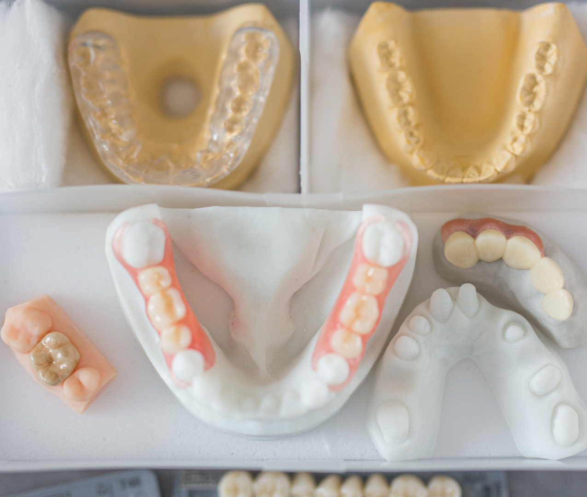

Prothèses fixes en céramique
Les prothèses fixes en céramique constituent une solution durable et très esthétique pour remplacer une ou plusieurs dents. Elles s'intègrent harmonieusement à votre dentition, avec un rendu proche du naturel.
Retrouver un sourire complet, fonctionnel et naturel est essentiel, que ce soit après une perte dentaire ou pour remplacer des dents fragilisées.
Le cabinet vous propose des prothèses sur-mesure, avec un résultat à la fois naturel et confortable, adapté à vos besoins.

Les prothèses fixes en céramique constituent une solution durable et très esthétique pour remplacer une ou plusieurs dents. Elles s'intègrent harmonieusement à votre dentition, avec un rendu proche du naturel.
Lorsque la situation l'exige, les prothèses dentaires amovibles sont une excellente option : partielles ou complètes, elles sont conçues pour s'adapter parfaitement à chaque patient et se retirent facilement.
Le cabinet étudie avec vous la solution prothétique la plus adaptée à votre situation.
Prendre rendez-vousLe cabinet est ouvert du lundi au vendredi de 09h30 à 19h00.
Les consultations se font uniquement sur rendez-vous.
Attention : les rendez-vous de pédodontie avec le Docteur Roua s'effectuent uniquement par téléphone et non par Doctolib.
Appelez le cabinet